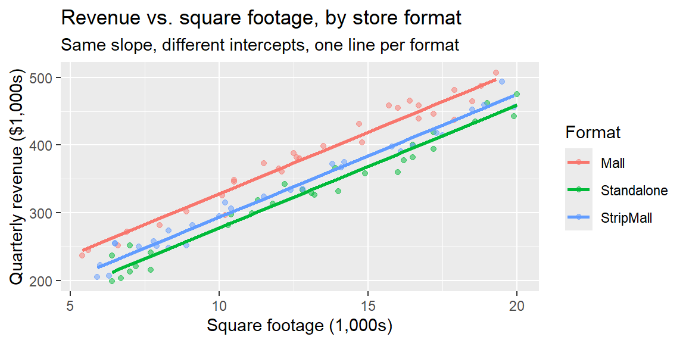

library(tidyverse)
set.seed(2025)
n_per <- 30
format <- rep(c("Mall", "Standalone", "StripMall"), each = n_per)
sq_ft <- round(runif(3 * n_per, 5, 20), 1)
#simulate the data: same slope on sq_ft, different baseline revenue by format
intercepts <- c(Mall = 150, Standalone = 100, StripMall = 120)
revenue <- intercepts[format] + 18 * sq_ft + rnorm(3 * n_per, 0, 15)
stores <- tibble(format = format, sq_ft = sq_ft, revenue = round(revenue, 1))24 Week 9: Categorical Predictors in Regression
24.1 Why This Matters
Every predictor in Chapter 23’s advertising model was quantitative, a dollar amount that could take any value. Plenty of business predictors aren’t quantitative at all: a store’s format (mall, standalone, strip mall), a customer’s segment (consumer, corporate, home office), a product’s category. Regression can absolutely include these, but a categorical variable has to be translated into numbers before least squares can use it. That translation uses indicator (dummy) variables.
24.2 Coding a Categorical Predictor as Dummy Variables
For a categorical variable with \(g\) categories, we create \(g-1\) indicator variables, each coded 0 or 1: \[
D_j = \begin{cases} 1 & \text{if the observation is in category } j \\ 0 & \text{otherwise} \end{cases}
\] One category is left out entirely and becomes the reference (baseline) category; its effect is absorbed into the model’s intercept. Using only \(g-1\) dummies for \(g\) categories (not \(g\)) is deliberate: including a dummy for every category, plus the intercept, would make the predictors perfectly redundant (knowing all but one dummy tells you the last one for free), a problem regression software can’t resolve. Software handles this automatically, R’s lm() picks a reference level for you (alphabetically first, by default) the moment a character or factor column is included as a predictor.
ExampleExample 9.8: Setting up the store-format model
A retail chain operates 90 stores across three formats, Mall, Standalone, and Strip Mall, and wants to understand how format relates to quarterly revenue, alongside each store’s square footage.
With three formats (\(g=3\)), the model needs \(g-1=2\) dummy variables. Using Mall as the reference (R’s default, alphabetically first): \[ D_{\text{Standalone}} = \begin{cases}1 & \text{Standalone}\\0 & \text{otherwise}\end{cases} \qquad D_{\text{StripMall}} = \begin{cases}1 & \text{Strip Mall}\\0 & \text{otherwise}\end{cases} \] The model is \[ \widehat{\text{revenue}} = b_0 + b_1(\text{sq\_ft}) + b_2 D_{\text{Standalone}} + b_3 D_{\text{StripMall}} \]
24.3 Fitting and Interpreting the Model
ExampleExample 9.9: The store-format model
model <- lm(revenue ~ sq_ft + format, data = stores)
summary(model)
Call:
lm(formula = revenue ~ sq_ft + format, data = stores)
Residuals:
Min 1Q Median 3Q Max
-35.351 -11.327 0.743 9.566 27.946
Coefficients:
Estimate Std. Error t value Pr(>|t|)
(Intercept) 147.4025 5.3156 27.730 < 2e-16 ***
sq_ft 18.1126 0.3547 51.071 < 2e-16 ***
formatStandalone -50.4366 3.7367 -13.498 < 2e-16 ***
formatStripMall -34.7499 3.7546 -9.255 1.49e-14 ***
---
Signif. codes: 0 '***' 0.001 '**' 0.01 '*' 0.05 '.' 0.1 ' ' 1
Residual standard error: 14.47 on 86 degrees of freedom
Multiple R-squared: 0.9711, Adjusted R-squared: 0.9701
F-statistic: 964.6 on 3 and 86 DF, p-value: < 2.2e-16The fitted model is \[ \widehat{\text{revenue}} = 147.40 + 18.11(\text{sq\_ft}) - 50.44\,D_{\text{Standalone}} - 34.75\,D_{\text{StripMall}} \]
Substituting each format’s dummy values shows what the model implies for each group separately:
- Mall (\(D_{\text{Standalone}}=0\), \(D_{\text{StripMall}}=0\)): \(\widehat{\text{revenue}} = 147.40 + 18.11(\text{sq\_ft})\)
- Standalone (\(D_{\text{Standalone}}=1\), \(D_{\text{StripMall}}=0\)): \(\widehat{\text{revenue}} = (147.40 - 50.44) + 18.11(\text{sq\_ft}) = 96.96 + 18.11(\text{sq\_ft})\)
- Strip Mall (\(D_{\text{Standalone}}=0\), \(D_{\text{StripMall}}=1\)): \(\widehat{\text{revenue}} = (147.40 - 34.75) + 18.11(\text{sq\_ft}) = 112.65 + 18.11(\text{sq\_ft})\)
Each format gets its own intercept, but they all share the same slope on sq_ft. Geometrically, this model is three parallel lines, one per format, shifted up or down by that format’s dummy coefficient.

ExampleExample 9.10: Interpreting the format coefficients
- \(b_2 = -50.44\) (Standalone): holding square footage fixed, a Standalone store is predicted to generate about $50,440 less quarterly revenue than a Mall store of the same size, the reference category.
- \(b_3 = -34.75\) (Strip Mall): holding square footage fixed, a Strip Mall store is predicted to generate about $34,750 less quarterly revenue than a Mall store of the same size.
- Both are highly significant (\(p<0.0001\)), and neither confidence interval contains 0 (Standalone: roughly \((-57.9,-43.0)\); Strip Mall: roughly \((-42.2,-27.3)\)), consistent with rejecting \(H_0:\beta_j=0\) for each.
- \(b_1=18.11\) (sq_ft): holding format fixed, each additional 1,000 square feet is associated with about $18,110 more in quarterly revenue, on average, the same slope for all three formats.
Note that every dummy coefficient is a comparison to the reference category, not to the other categories directly. This model doesn’t directly report the Standalone-vs-Strip-Mall difference, but it can be recovered: \(b_2 - b_3 = -50.44 - (-34.75) = -15.69\), so Standalone stores are predicted to generate about $15,690 less revenue than Strip Mall stores of the same size.
NoteChanging the reference category doesn’t change the model’s predictions
Choosing Standalone or Strip Mall as the reference instead of Mall would change which coefficients appear in the output, and their signs, but every format’s predicted revenue at a given square footage would come out identical either way. The reference category is a bookkeeping choice, usually picked for interpretability (a natural baseline, or the largest group), not a modeling assumption. In R, relevel(factor_column, ref = "Standalone") changes which category is treated as the reference.
24.4 Comparing to a Model Without Format
ExampleExample 9.11: Does format actually help?
model_sqft_only <- lm(revenue ~ sq_ft, data = stores)
summary(model_sqft_only)$adj.r.squared[1] 0.9061333summary(model)$adj.r.squared[1] 0.9701333Adjusted \(R^2\) rises from about 0.906 (square footage alone) to about 0.970 once format is added, format captures real, systematic variation in revenue beyond what square footage alone explains, consistent with Chapter 23’s point that a genuinely useful predictor raises adjusted \(R^2\), not just raw \(R^2\).
24.5 Computing Categorical Predictors in R and Excel
ExampleExample 9.12: The store-format model in R and Excel
In R, passing a character or factor column directly to lm() creates the dummy variables automatically, exactly as shown above:
lm(revenue ~ sq_ft + format, data = stores)Excel’s regression tools expect purely numeric input, so dummy columns have to be built by hand with IF() before running the Data Analysis ToolPak’s Regression tool:
=IF(format_cell="Standalone", 1, 0) ' one column for D_Standalone
=IF(format_cell="StripMall", 1, 0) ' one column for D_StripMallInclude both dummy columns (but not a third one for Mall) alongside sq_ft as the “Input X Range.”
24.6 Recap
| Keyword | Definition |
|---|---|
| Indicator (dummy) variable | A 0/1 variable marking whether an observation belongs to a specific category. |
| Reference (baseline) category | The category with no dummy variable of its own; its effect is absorbed into the intercept. |
| \(g-1\) rule | A categorical variable with \(g\) categories requires \(g-1\) dummy variables to avoid redundancy with the intercept. |
| Dummy coefficient | The predicted difference in \(y\) between that category and the reference category, holding other predictors fixed. |
| Parallel-lines interpretation | With one quantitative predictor and dummy variables (no interaction), each category gets its own intercept but shares the same slope. |
24.7 Check Your Understanding
NoteProblems
A company models employee salary using
years_experienceanddepartment(four categories: Sales, Engineering, Marketing, Operations). How many dummy variables doesdepartmentrequire, and why not one per department?In a model \(\widehat{\text{salary}} = 45{,}000 + 2{,}100(\text{years\_experience}) + 8{,}000\,D_{\text{Engineering}} - 1{,}500\,D_{\text{Marketing}}\), with Operations as the reference category, interpret the coefficient on \(D_{\text{Engineering}}\) in a full sentence.
Using the model in Problem 2, what is the predicted salary difference between Engineering and Marketing employees with the same years of experience?
Suppose a colleague re-fits the salary model using Engineering as the reference category instead of Operations. Would you expect the predicted salary for a 10-year Marketing employee to change? Why or why not?
Explain, in your own words, why forcing all categories to share the same slope on a quantitative predictor (the “parallel lines” model in this section) is a real modeling assumption, one that a graph like Example 9.9’s plot can help you check.
TipSolutions
Three dummy variables (e.g., \(D_{\text{Sales}}\), \(D_{\text{Engineering}}\), \(D_{\text{Marketing}}\)), with Operations left out as the reference. Including a fourth dummy for Operations as well would make the four dummies plus the intercept perfectly redundant, once you know an employee isn’t in Sales, Engineering, or Marketing, you already know they’re in Operations, so a fourth indicator variable adds no new information and breaks the least-squares calculation.
Holding years of experience fixed, an Engineering employee is predicted to earn about $8,000 more per year than an Operations employee (the reference category) with the same experience, on average.
\(8{,}000 - (-1{,}500) = 9{,}500\); Engineering employees are predicted to earn about $9,500 more than Marketing employees with the same years of experience.
No, the predicted salary for any specific employee (a 10-year Marketing employee, in this case) would come out the same regardless of which category is chosen as the reference. The reference category only changes which coefficients are reported and what they’re compared against; it doesn’t change what the fitted model actually predicts for any given combination of predictor values.
Forcing a common slope assumes the relationship between the quantitative predictor and the response (e.g., how revenue changes per additional square foot) is the same across every category, only the starting level (intercept) differs. If, in reality, larger stores benefited more (or less) from being a Mall format specifically, that would show up as lines with different slopes, not just different heights, and a single common-slope model would be misspecified. Plotting the data by category, as in Example 9.9, and checking whether each group’s points seem to follow roughly the same slope is a direct way to sanity-check this assumption before trusting the model.